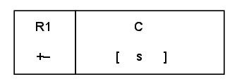
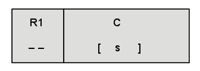
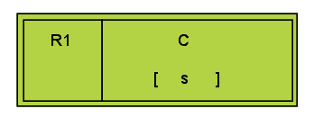
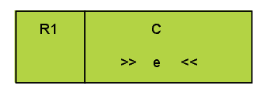

| Label |
Name |
Description |
| A |
Component Name |
Specifies a component |
| B |
Behavior |
Specifies the behavior associated with the component |
| C |
Operator |
Describes threaded behavior that is linked to the matching
node in the tree |
| D |
Label |
An optional label for disambiguation (in case a node appears
elsewhere with the same component and behavior) |
| E |
Behavior Type |
Delimiters on the behavior indicating the type of behavior
involved |
| F |
Traceability Link |
A reference to the requirements document |
| G |
Traceability Status |
Indicates how the node relates to the traceability link |
| H |
Tag |
The box on the left-hand side of the node (may be omitted in
different contexts) |
| I |
Behavior Tree Node |
A node consisting of all or some of the information above |
Elements of a Behavior Tree Node
| Label |
Name |
Description |
| A |
Primary Component & Behavior |
The component and behavior that form the relation |
| B |
Related Component |
Component (and optional behavior) related to the primary
component and behavior |
| C |
Qualifier |
Specifies the type of the relation. Must be one of What,
Where, When, Why, Who or How |
| D |
Preposition |
Further qualifies the relation to remove potential ambiguity
|
| E |
Secondary Relation |
The related component is linked to the primary component
using a forward slash (/). Multi-level relations can be formed by
using multiple forward slashes |
Elements of a Behavior Tree Relation
| Type |
Graphical Notation |
Description |
| Original |
|
No traceability status indicates that the behavior is stated
in the original requirements. The color green is used for original
requirements. |
| Implied |
 |
The + traceability status indicates that the behavior is not
explicitly stated in the original requirements but is implied by the
requirement. The color yellow is used for implied behavior. |
| Missing |
 |
The - traceability status indicates that the behavior is
missing from the original requirements and is needed for
completeness. The color red is used for missing behavior. |
| Design |
 |
The +- traceability status indicates that the behavior is a
refinement of the original requirements, indicating that the
behavior is implied but the detail to describe it is missing. |
| Updated |
 |
The ++ traceability status indicates that the behavior has
been added in the post-development or maintainence phase. The color
blue is used for updated behavior. Where there are different series
of changes / upgrades we use ++v1.0, ++v2.0, etc to indicate the
particular upgrade series. |
| Deleted |
 |
The -- traceability status indicates that the behavior has
been deleted from the behavior tree. The color grey is used for
deleted behavior, but the nodes may also be hidden optionally by
using tool support. |
Node Tags
| Type |
Graphical Notation |
Description |
| State Realisation |
 |
Component C realises state s. |
| System State Realisation |
 |
This is a state realisation decorated with a double box to
indicate the component is a system component in the current context.
There can only be one system component in each context. |
| Selection |
 |
If condition b evaluates to true, then pass control to child
nodes otherwise terminate. |
| Event |
 |
Wait until event e is received. |
| Guard |
|
Wait until condition b evaluates to true, then pass control
to child nodes. |
| Internal Output |
 |
Generate input e and send to the system. |
| Internal Input |
 |
Wait for input e from the system. |
| External Output |
 |
Generate output e and send to the environment. |
| External Input |
 |
Wait for input e to be received from the environment. |
| Empty Node |
|
Empty Nodes can be used together with labels to be origins
or destinations of node operators. Empty Nodes are also useful for
grouping child nodes into multiple branch types. |
Basic Nodes